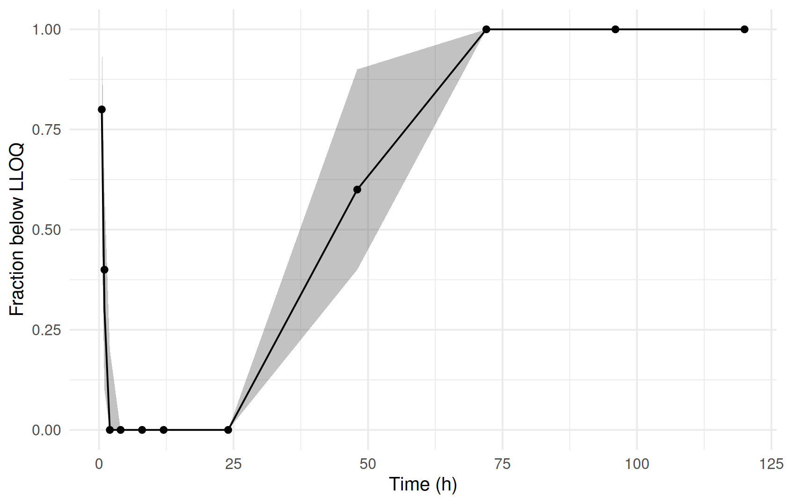

bloq <- ferx_example("warfarin_bloq")
w <- ferx_example("warfarin")
censoring_dir <- book_tempdir("censoring")
bloq_data <- read.csv(bloq$data, na.strings = ".")
warfarin_data <- read.csv(w$data, na.strings = ".")
count(filter(bloq_data, EVID == 0), CENS)
#> CENS n
#> 1 0 100
#> 2 1 10
filter(bloq_data, CENS == 1) |>
select(ID, TIME, DV, CENS) |>
mutate(DV_in_warfarin_data = warfarin_data$DV[bloq_data$CENS == 1])
#> ID TIME DV CENS DV_in_warfarin_data
#> 1 1 120 2 1 1.6785
#> 2 2 120 2 1 1.5248
#> 3 3 120 2 1 1.9121
#> 4 4 120 2 1 1.4205
#> 5 6 120 2 1 1.8242
#> 6 7 96 2 1 1.5919
#> 7 7 120 2 1 0.9761
#> 8 8 96 2 1 1.5117
#> 9 8 120 2 1 0.8700
#> 10 10 120 2 1 1.9807Censored observations (BLOQ)
Where you are
Assays have limits. A concentration below the lower limit of quantification (LLOQ) is reported only as “below the limit”, and one above the upper limit (ULOQ) as “above”. These observations still carry information: the true value lies outside the quantified range. This chapter shows how to mark them in the data and fit them with the M3 likelihood, and what goes wrong with the alternatives.
WarningMaturity: beta
ferx-core labels LOQ-censored observations beta. See feature maturity.
The data
warfarin_bloq is the warfarin dataset with an LLOQ of 2. The CENS column marks the 10 observations below it (CENS = 1), and their DV holds the limit, not the measured value:
All other rows are identical to the warfarin data, whose concentrations below 2 are therefore known. That makes it possible to check each method against the fit to the uncensored data.
Minimal runnable call: the M3 likelihood
The model file sets bloq_method = m3 in [fit_options]:
invisible(ferx_model_get_section(bloq$model, "fit_options"))
#> # [fit_options]
#> method = focei
#> maxiter = 300
#> covariance = true
#> bloq_method = m3
fit_m3 <- ferx_fit(bloq$model, bloq$data, verbose = FALSE)
fit_m3$bloq_method_label
#> [1] "m3"
fit_m3$theta
#> TVCL TVV TVKA
#> 0.1328141 7.7317342 0.8097268With M3, a censored observation contributes the probability that the prediction, with its residual error, lies below the limit. It does not contribute a residual.
Reading the result
sdtab keeps the censored rows, with the CENS flag. Their weighted residuals are NaN, because there is no observed value to compare with:
filter(fit_m3$sdtab, ID == 1, TIME >= 72) |> select(ID, TIME, DV, CENS, PRED, IPRED, CWRES, IWRES)
#> ID TIME DV CENS PRED IPRED CWRES IWRES
#> 1 1 72 3.7373 0 3.836187 3.735040 0.07720514 0.05623816
#> 2 1 96 2.5019 0 2.540122 2.512399 -0.34602321 -0.38835948
#> 3 1 120 2.0000 1 1.681935 1.689982 NaN NaNResidual plots (Diagnosing the model) should therefore leave out the censored rows. Their predictions show whether the model puts them below the limit.
The alternatives to M3 are bloq_method = "drop", which fits the censored rows as if the limit had been measured, and excluding the rows with ignore = "CENS == 1" (Preparing and checking the analysis dataset). The table compares them with the fit to the uncensored warfarin data:
warfarin_bloq (LLOQ 2, 10 of 110 observations censored), and the fit to the uncensored data.
bloq_row <- function(method, f) {
data.frame(method = method, observations = f$n_obs, label = f$bloq_method_label, t(f$theta),
PROP_ERR = f$sigma[[1]])
}
# suppress the R warnings that report overriding the model file's bloq_method
compare_methods <- function(data_file) {
rbind(bloq_row("m3", ferx_fit(bloq$model, data_file, verbose = FALSE)),
bloq_row("drop (fit at the limit)",
suppressWarnings(ferx_fit(bloq$model, data_file, bloq_method = "drop", verbose = FALSE))),
bloq_row("exclude (ignore = \"CENS == 1\")",
suppressWarnings(ferx_fit(bloq$model, data_file, bloq_method = "drop", ignore = "CENS == 1",
verbose = FALSE))),
bloq_row("uncensored data", suppressWarnings(ferx_fit(bloq$model, w$data, bloq_method = "drop",
verbose = FALSE))))
}
compare_methods(bloq$data)
#> method observations label TVCL TVV
#> 1 m3 110 m3 0.1328141 7.731734
#> 2 drop (fit at the limit) 110 drop 0.1259690 8.078759
#> 3 exclude (ignore = "CENS == 1") 100 drop 0.1327874 7.732789
#> 4 uncensored data 110 drop 0.1326954 7.737706
#> TVKA PROP_ERR
#> 1 0.8097268 0.01076075
#> 2 0.8508855 0.07879913
#> 3 0.8098811 0.01077597
#> 4 0.8107961 0.01056510With 9% of the observations censored, fitting them at the limit already inflates the residual error several-fold and shifts the structural estimates. M3 and exclusion both stay close to the uncensored fit. The OFVs of the methods are different objectives, so the table does not compare them.
Options that matter
| Where | Setting | Meaning |
|---|---|---|
| Data | CENS = 1 |
Below the LLOQ; DV holds the LLOQ |
CENS = -1 |
Above the ULOQ; DV holds the ULOQ |
|
CENS = 0 |
An ordinary observation | |
[fit_options] |
bloq_method = m3 or drop (alias bloq) |
M3 likelihood, or censored rows fitted at their DV
|
ferx_fit() |
bloq_method = |
"m3", "drop", or NULL to keep the model file’s choice |
ferx_fit() |
ignore = "CENS == 1" |
Remove the censored rows from the fit instead |
bloq_method = "drop" does not remove rows. Each censored row is fitted at the limit in DV. To remove them, use ignore.
Variants
Heavier censoring
A copy of the warfarin data with an LLOQ of 6 censors almost half of the observations:
lloq6 <- warfarin_data |>
mutate(below = EVID == 0 & !is.na(DV) & DV < 6,
CENS = as.integer(below), DV = ifelse(below, 6, DV)) |>
select(-below)
lloq6_file <- file.path(censoring_dir, "warfarin_lloq6.csv")
write.csv(lloq6, lloq6_file, row.names = FALSE, na = ".")
count(filter(lloq6, EVID == 0), CENS)
#> CENS n
#> 1 0 62
#> 2 1 48
compare_methods(lloq6_file)
#> method observations label TVCL TVV
#> 1 m3 110 m3 0.13444727 7.711495
#> 2 drop (fit at the limit) 110 drop 0.05669192 9.464446
#> 3 exclude (ignore = "CENS == 1") 62 drop 0.13444603 7.711511
#> 4 uncensored data 110 drop 0.13269540 7.737706
#> TVKA PROP_ERR
#> 1 0.8082742 0.01093043
#> 2 1.6191769 0.14694432
#> 3 0.8082748 0.01093123
#> 4 0.8107961 0.01056510M3 still recovers the uncensored estimates. Fitting at the limit now fails badly: clearance is less than half, and the residual error absorbs the misfit. Excluding the rows matches M3 here, because the residual error of this model is about 1%. The predictions of the censored rows lie well below the limit, where the M3 probability is essentially 1 and adds almost nothing. When predictions are close to the limit, or the residual error is larger, the censored rows carry information that exclusion throws away.
Observations above the upper limit
CENS = -1 marks an observation above the ULOQ. In a copy of the warfarin data, concentrations above 11 are censored at 11:
uloq <- warfarin_data |>
mutate(above = EVID == 0 & !is.na(DV) & DV > 11,
CENS = -as.integer(above), DV = ifelse(above, 11, DV)) |>
select(-above)
uloq_file <- file.path(censoring_dir, "warfarin_uloq11.csv")
write.csv(uloq, uloq_file, row.names = FALSE, na = ".")
count(filter(uloq, EVID == 0), CENS)
#> CENS n
#> 1 -1 19
#> 2 0 91
compare_methods(uloq_file)[c(1, 2, 4), ]
#> method observations label TVCL TVV TVKA
#> 1 m3 110 m3 0.1327202 7.742689 0.8117852
#> 2 drop (fit at the limit) 110 drop 0.1343149 8.033691 0.8516334
#> 4 uncensored data 110 drop 0.1326954 7.737706 0.8107961
#> PROP_ERR
#> 1 0.01122861
#> 2 0.03397208
#> 4 0.01056510Checking the censored fraction
A visual predictive check (Simulation-based evaluation: VPC) of censored data compares the fraction below the limit. ferx_simulate() returns uncensored simulated values, so the fraction of simulated concentrations below the LLOQ at each time can be set against the observed fraction of censored rows:
fit_lloq6 <- ferx_fit(bloq$model, lloq6_file, verbose = FALSE)
sim_lloq6 <- ferx_simulate(bloq$model, lloq6_file, n_sim = 200, seed = 1, fit = fit_lloq6)
simulated_fraction <- sim_lloq6 |>
group_by(SIM, TIME) |>
summarise(fraction = mean(DV_SIM < 6), .groups = "drop") |>
group_by(TIME) |>
summarise(lo = quantile(fraction, 0.05), mid = median(fraction), hi = quantile(fraction, 0.95))
observed_fraction <- filter(lloq6, EVID == 0) |> group_by(TIME) |> summarise(fraction = mean(CENS == 1))
ggplot(simulated_fraction, aes(TIME)) +
geom_ribbon(aes(ymin = lo, ymax = hi), alpha = 0.3) +
geom_line(aes(y = mid)) +
geom_point(data = observed_fraction, aes(y = fraction)) +
labs(x = "Time (h)", y = "Fraction below LLOQ")
Estimation method
With FOCEI, the method of this model file, the censored term is evaluated at the individual prediction. FOCE uses a linearized version and reaches a different optimum, and ferx says so:
# suppress the R warning that reports overriding the model file's method
fit_foce <- suppressWarnings(ferx_fit(bloq$model, bloq$data, method = "foce", verbose = FALSE))
rbind(focei = fit_m3$theta, foce = fit_foce$theta)
#> TVCL TVV TVKA
#> focei 0.1328141 7.731734 0.8097268
#> foce 0.1398923 7.690181 0.7048062
ferx_get_warnings(fit_foce, as_df = TRUE)[, c("severity", "category")]
#> severity category
#> 1 warning bloq_method
#> 2 warning dw_autocorrelationPitfalls
-
dropkeeps the rows. It fits censored rows at the limit, which biases the fit as censoring grows. Use M3, or remove the rows withignoreknowingly. -
DVmust hold the limit. ForCENS = 1rows the value inDVis the LLOQ that M3 integrates up to, not a measured value, zero or half the limit. -
Residuals of censored rows are
NaN. Filter them out of residual plots and summaries. -
Compare like with like. OFVs from M3 and from
dropor exclusion are different objectives. Compare M3 models with M3 models.
Warnings you may see here
-
bloq_method(warning): M3 combined with an estimation method whose censored likelihood differs from FOCEI’s. Examples are FOCE without interaction (above) and the Gauss-Newton optimizers, which approximate the M3 term. Usemethod = "focei"for the conditional M3 likelihood. See the ferx-core LOQ-censored observations page.
Summary
- Mark censored observations with
CENS(1 below the LLOQ, −1 above the ULOQ) and put the limit inDV. - Fit them with
bloq_method = "m3", preferably with FOCEI.sdtabkeeps them withNaNresiduals. -
dropfits censored rows at the limit and is biased.ignore = "CENS == 1"removes them. - Check a censored model with the fraction below the limit in simulations.
Next: PK/PD and multiple endpoints models drug effects together with concentrations.
TipReference
- R help:
?ferx_fit(bloq_method,ignore),?ferx_simulate - ferx-core: LOQ-censored observations, data format